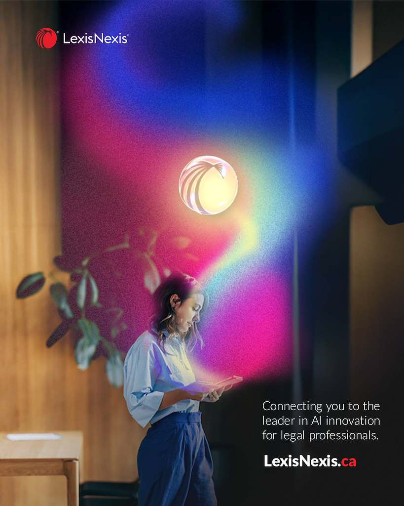
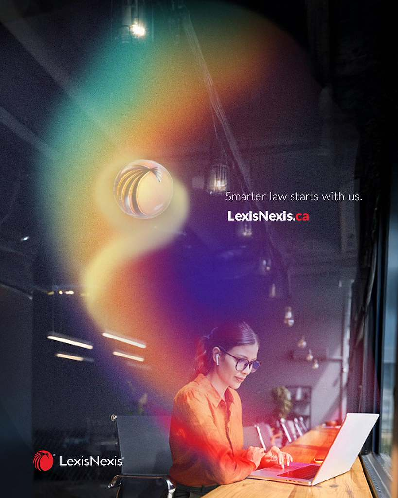
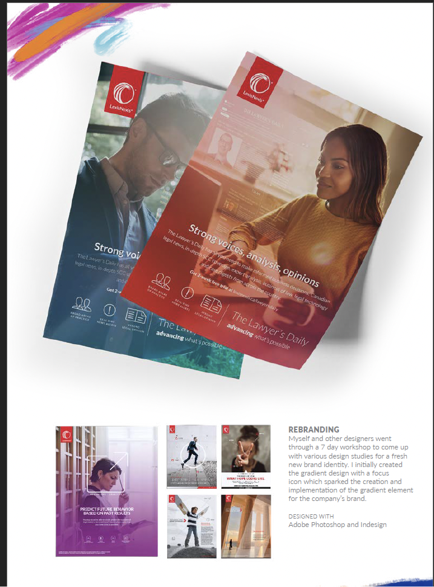

Making the Protégé connection visible.
Developed visual directions for LexisNexis Canada’s Protégé marketing. Created multicolour light-leak explorations and supplied a design reference for team execution. Revisited an earlier halo device and guided its refinement into purple to align with Protégé branding, directing its application across Canadian marketing assets.
One visual idea.
Many applications.
Creative direction, visual concept development
and design of the light-leak explorations
TEAM
Design and execution of the tablet asset above
and the four campaign applications below,
based on my reference and creative direction
PROJECT
LexisNexis Canada · Developed Q4 2025
Exploring light and colour.
Developed an alternative light-leak direction for the Protégé visual refresh, combining multicolour lighting, photography and a floating LexisNexis symbol. These explorations were not selected for rollout.
Visual concept and design


A fresh direction, in colour.
Originated the gradient concept and created the initial design for a LexisNexis US visual refresh in 2017. The team developed further iterations. Later adapted the approach for selected Canadian materials, including The Lawyer’s Daily, carrying the concept across different imagery, colours and layouts.

An idea that travelled across markets.
Original visual concept, initial design
and selected Canadian adaptations
TEAM
Development of subsequent design iterations
PROJECT
LexisNexis US · Originated 2017
Canadian adaptations · From 2018